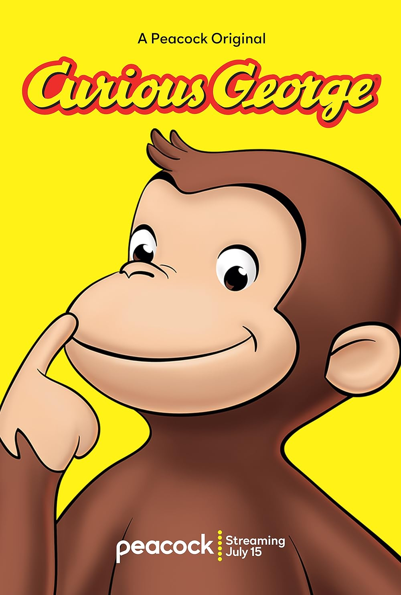

use of mark in Bootstrap
Use Ctrl + pto open the Print Dialog Box.
The cat is a domestic speices of small carnivorous mammal. It is the only domesticated species in the family Felidae and is often referred to as the domestic cat to distinguish it from the wild members of the family.
Whales are a widely distributed and diverse group of fully aquatic placental marine mammals. As an informal and colloquial grouping, they correspond to large members of the infraorder Cetacea, i.e. all cetaceans apart from dolphins and porpoises
The dog is a domesticated descendant of the wolf. Also called the domestic dog, it is derived from extinct Pleistocene wolves, and the modern wolf is the dog's nearest living relative. The dog was the first species to be domesticated by humans.

Curious George is a fictional monkey who is the title character of a series of popular children's picture books written by Margret and H. A. Rey and illustrated by Alan Shalleck. Various media, including films and TV shows, have been based upon the original book series.
